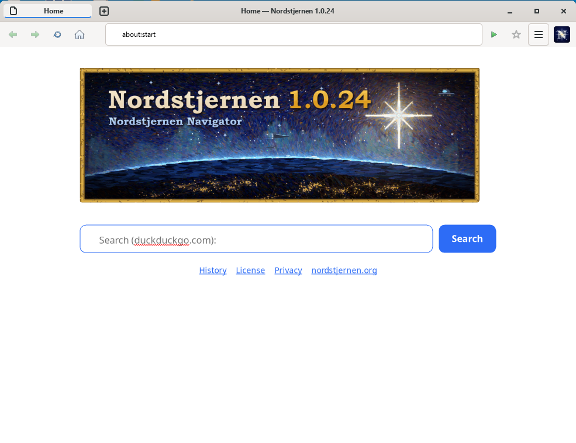

Nordstjernen Web Browser
Nordstjernen is a web browser, written from scratch in C, focused on supporting the HTML and CSS standards. It runs on Windows, Mac and Linux, with an Android port in progress. Nordstjernen is built in Norway.
Nordstjernen Browser version 1.0.17 released! Read the announcement · More info here.
{kind=link}

HTML Standard. Behaviour is measured against the spec text, section by section, not against another browser — 136 spec rows fully implemented, 27 partial, 4 absent across WHATWG HTML sections 1–16 as of June 2026. See docs/HTML-compatibility.md.
Secure. Process-per-tab design — each tab runs in its own sandboxed renderer process (seccomp + Landlock on Linux), talking to the UI over IPC and shared-memory framebuffers · no JIT.
Minimalism. The whole engine is about 127,000 lines of clean-room C (plus a thin C++ Qt shell), excluding the vendored libraries — small enough for one person to read and audit end-to-end.
Local AI. The about:start new-tab page is a chat with a small language model running entirely on your machine via llama.cpp — no cloud, no network at inference time. Build with -Dai=disabled for a fully offline binary.
Nordstjernen has no JIT so it is much more secure, and can still be fast enough. It ships no telemetry of any kind.
Read more about the innovations in the Nordstjernen web browser.
news
- · Nordstjernen 1.0.17 released — a maintenance release. Announcement » · Release notes »
- · Nordstjernen 1.0.16 released — a maintenance release. Announcement » · Release notes »
- · Nordstjernen 1.0.15 released — a maintenance release. Announcement » · Release notes »
- · Nordstjernen 1.0.14 released — a maintenance release. Announcement » · Release notes »
- · Nordstjernen 1.0.12 released — a maintenance release. Release notes »
- · Nordstjernen 1.0.11 released — a maintenance release. Announcement » · Release notes »
- · Nordstjernen 1.0.0 released — the first stable release. Announcement » · Release notes »
specifications
| language | C · ~134 kLOC clean-room · GTK 4 shell · Java/JVM binding via JNI · fully auditable |
|---|---|
| html / css | lexbor (parser, WHATWG URL, selectors) |
| javascript | quickjs-ng — bytecode interpreter, no JIT |
| webassembly | WAMR — interpreter behind the WebAssembly JS API |
| images | Wuffs v0.4 (PNG / GIF / BMP / JPEG) · libwebp (WebP) · libavif (AVIF, optional) |
| ai | llama.cpp — on-device about:start chat · no cloud · optional GPU offload (Vulkan / Metal) · -Dai=disabled for offline builds |
| ui | GTK 4 (≥ 4.22.1 on Windows, ≥ 4.14 elsewhere) · Pango text shaping · one window per page, no tab strip |
| network | libcurl ≥ 7.85 · HTTP/2 |
| hardening | process-per-tab · seccomp + Landlock sandbox on Linux · sandboxed renderer processes · no JIT |
| privacy | no telemetry · partitioned cookies · HSTS · CSP · SRI |
| standards | 139 spec rows fully implemented, 29 partial, 3 absent · WHATWG HTML sections 1–16 (June 2026) |
| platforms | linux (gtk) · windows · macos · android · java/jvm · freebsd · netbsd |
| license | NSL-1.0 → MIT after 10 years · The Nordstjernen Source License is inspired by the Functional Source License (FSL), a Fair Source license that converts to Apache 2.0 or MIT. |
download
Latest tagged release: Nordstjernen 1.0.17 — released 30 June 2026. Builds for Windows, macOS and Linux, plus the source, are all on the download page.
languages
English · 中文 · हिन्दी · Español · Français · العربية · বাংলা · Português · Русский · اردو · Bahasa Indonesia · Deutsch · 日本語 · Kiswahili · मराठी · తెలుగు · Türkçe · தமிழ் · Tiếng Việt · 한국어 · Norsk